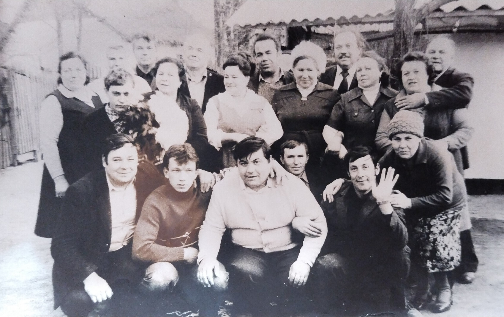

Дмитро Мовчан
Розробник Python | Засновник освітнього AI-проєкту | Колишній держслужбовець
Контактна інформація
- Адреса: Bahnhofstr. 13, 86453 Dasing, Німеччина
- Телефон: +49 176 84143837 (DE), +380974582854 (UA)
- Email: 0974582854m@gmail.com
- GitHub: Dmytro-bruno
- Сайт проєкту: bildmind.com
Фото профілю

Проєкт Bildmind
Bildmind — освітній інструмент на базі ШІ. Він допомагає людям (особливо мігрантам):
- Вивчати мови за допомогою GPT
- Формувати особистий словниковий запас
- Тестуватись інтервально (SM-2)
- Адаптувати інтерфейс під особливі потреби
- Інтегруватися в суспільство через EdTech-платформу
Демонстрація проєкту
Професійний досвід
| Рік |
Посада |
Організація |
| 2022–2023 |
Волонтер |
Україна (допомога ЗСУ) |
| 2021 |
Головний спеціаліст |
Гайворонська міськрада |
| 2020 |
Кандидат у депутати |
Політична партія «За Майбутнє» |
Освіта
- 2005–2009 — КНТЕУ, економіка, менеджмент і право
- 2002–2005 — Вінницький коледж економіки (фінанси, бухоблік)
- 2002 — Центр «Новий», комп'ютерна грамотність
Улюблена музика під час кодування
Мови
- Українська — рідна
- Російська — вільно
- Німецька — рівень B1 (в процесі вдосконалення)
Технічні навички
- Python, FastAPI, Alembic, PostgreSQL
- Docker, Git, HTML, REST API
- GPT інтеграція, SM-2 алгоритм, MVP архітектура
Особисті якості
- Стратегічне мислення
- Відповідальність і самоорганізація
- Здатність працювати з командою і самостійно
Цінності
Моя мета — створити нове освітнє середовище через поєднання AI, людської мотивації та соціального впливу.